Casting Rods
At least something good came from these... Fishcasters. While it is doubtless useful if I would like to fish, a Casting Rod will serve me as well as any Staff when swung gently.
This is the online version of the Fishcasting documentation.
This page is built from the latest code on GitHub. It may describe newer features that you may not necessarily have, even on the latest Modrinth/CurseForge version!
Entries which are blurred are spoilers. Click to reveal them, but be aware that they may spoil endgame progression. Alternatively, click here to get a version with all spoilers showing.
The past is a foreign country; they do things differently there.
I devote this section to the magical and mysterious items I might encounter in my studies.
At least something good came from these... Fishcasters. While it is doubtless useful if I would like to fish, a Casting Rod will serve me as well as any Staff when swung gently.
A truly remarkable invention for such a trite sport. A Focus Bobber not only extends my ambit by about an arms length from its origin, it also casts any stored hex within once I pull on it with enough force. This added range does not come for free however, as casting via the Focus Bobber costs Amethyst Dust equal to the square of the length of the vector from myself to the bobber.
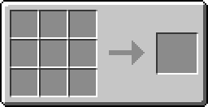
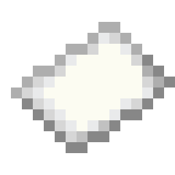
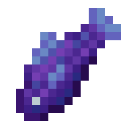
A construction similar to the Focus. Much like a focus, it can be written to when in my hand, or when on the ground, as well as when it has been cast by a rod.
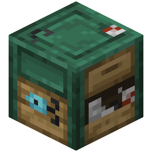
Some useful recipes to be certain, should I ever come across a fool foolish enough to part with these without knowing their true value as sources of Media. If I wish to fish I will need an Angling Table to better accessorize my rod.
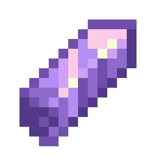
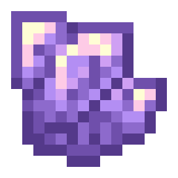
These Crystal Shrimp do look quite delicious... Especially when they're grouped together...
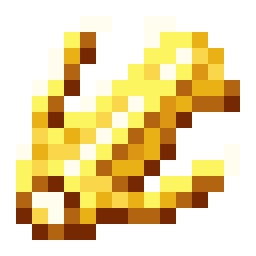
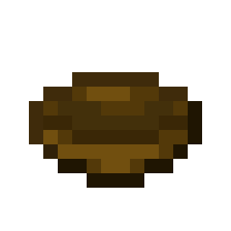
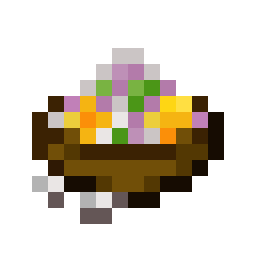
Fried to perfection, tender and crispy when eaten fresh.
This meal provides some clarity for a duration after consumption and is supposedly popular among merchants and fishers with enough wealth.
This imposing Crystalline Carp looks like it could channel media without any effort at all, if it had the brains to do so.
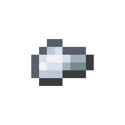
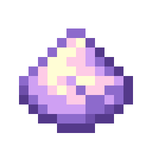
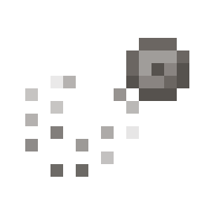
These small things seem to have some almost negligible but noticeable effect on less intelligent life. While hardly useful in my research, the sound the line makes is pleasant on the ears. If only the bait were so kind on the nose...
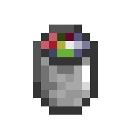
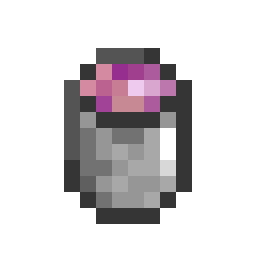
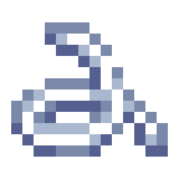
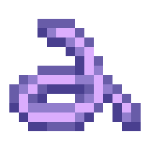
Media-infused Paraphernalia
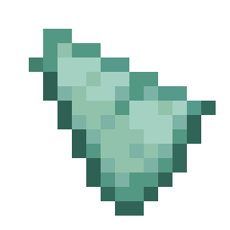
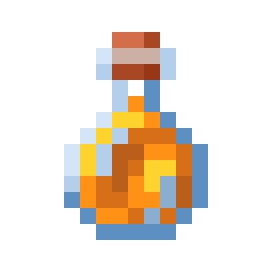
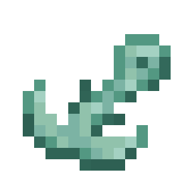
Recommended by a passing fisher I reluctantly exchanged a few short words with, these oddities would surely come in handy. Should I wish to subject myself to the smell of raw fish on a cold, stony shore.
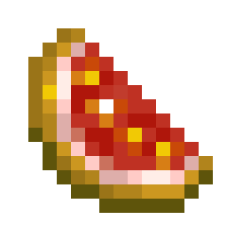
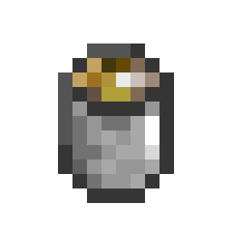
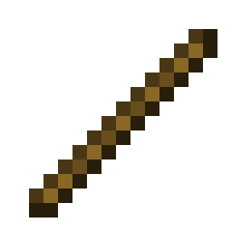
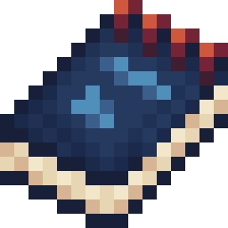
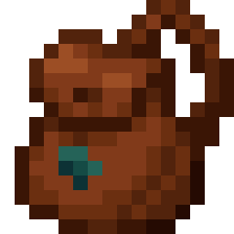
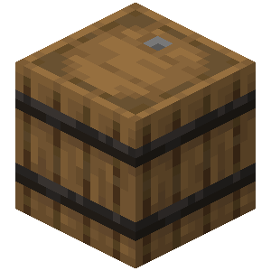
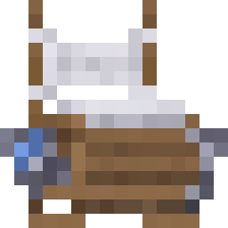
Fisher's Recommendation
I have seen... so much. I have... experienced... annihilation and deconstruction and reconstruction. I have seen the atoms of the world screaming as they were inverted and subverted and demoted to energy. I have seen I have seen I have s
Ha! That even that fisher should have gone to such lengths -- just in order to fish without pause... I shudder to imagine what over a week of non-stop fishing would do to my psyche. As different as this Casting Rod may look, it offers me no additional benefits in my work aside from its durability, should I wish to cast using a Focus Bobber.
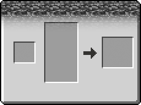
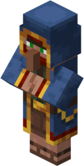
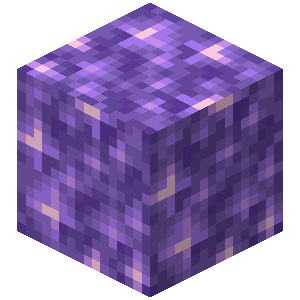
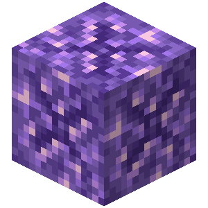
For a brief few moments when under heightened stress and with their minds slipping, certain traders reach a state of mind ripe for plucking. In those instants, if I were to flay their mind, even an inexperienced wanderer would suffice for my work. For this to work, the subject must be fully submerged in the void. I may use a Focus Bobber to extend my ambit into the void.
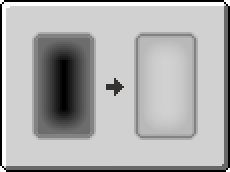
Whatever it is that came to inhabit these things, it has warped the body into something else in the process. In any case, with the sounds and writhing they do, I should consider it a good deed to set them free with a bolt of lightning. In the process, I may find an Allay suitable for my work.
Further, some texts vaguely related to some sort of figure in the "Fishcasting" society have surfaced... Literally.
'I am writing this to whomever it may concern.
I will not be returning from sea.
I like it out here.'
'If you're fishing around on the ocean, you'll come across bottles I've tossed with junk I wanted to get rid. Some of it I just wanted to get off my mind.
Break them if you're interested in finding out what's inside.
Have fun cleaning the ocean up.'
Year , Day 1.
I'm going to be entering the competition again this year. It'll start tomorrow. As usual I will be using my trusty wooden fishing rod. The people telling me to upgrade my rod are out of their minds, my rod works perfectly fine. At least only total idiots would accuse somebody without a casting rod of hexcasting.
Year , Day 2.
Year , Day 3.
Year , Day 4.
Year , Day 5.
Year , Day 6.
Year , Day 7.
Year , Day 8.
Year , Day 9.
Year , Day 10.
Year , Day 11.
I neglected to step away from fishing to write in my diary again this year. I won, again. I passed out as soon as I handed in my last batch of fish, raising my final score to well over two thousand points, putting me at number 1 world-wide, again. My friends put in a modest effort, reaching over a thousand points each, getting them a shared sixty-ninth place. I don't think I'll be fishing next year.
I'm going to go for a walk.
Year , Day 90.
I've moved, I no longer have a partner and I've decided to stop standing around while fishing for once. I think I'll pick up sailing. Maybe I'll even get that casting rod people had been nagging me about.
If I'm going to be touching any of that stuff, I may as well do so wasted. I've got enough bottles to last me a lifetime, anyway. I'll just chuck the bottles out along with anything else I want to get rid of when I'm done.
Year , Day 33.
I found a small island and got bored. I'm sitting next to a hole, staring into a dark abyss after a Chasm Eel ate through the bedrock. Maybe I've spent too long fishing alone out at sea.
I'm going to try casting my tackle in and see what happens.
Year , Day 34.
It almost feels as if something is trying to seep into me, warded off by my present enough mind. The other life around here seems unbothered, is it because I'm not as simple or is it because of something else?
Year , Day 38.
One of those wandering bums showed up to pester me again. How they even found me down here is beyond me. Figured I'd show the trader what's what and scare them off for good using my Focus Bobber. For some reason, I lost sight of the trader after reeling in.
Year , Day 39.
The fish I've found here are strange. One of the stranger fish had no fins and no gills. It's making a lot of noise, almost like a ticking clock, but I think I'll keep it as a pet. Doesn't seem to need much maintenance, and I could use the company down here.
Year , Day 102.
I've had enough of spending all my time hiding away from the sun. There aren't any more fish to be caught here. I spent the better part of the last week trying to take apart this look-alike I fished up. It is an unremarkable blob of flesh Cursed to live, intelligent much like an Allay, yet undying.
I've tried nearly everything I could to carefully desynthesize it with no luck. I returned the thing to the void, expecting it to be able to swim there, since that's where I found it. It did not. At least I still have my trusty pet, still alive even after I silenced it using a spell. Should I try evaporating it with a bolt of Media next? No, I must keep it for my big fish collection.
A list of all the patterns I've discovered, as well as what they do.
I came across a soggy book in my travels written by a sage fisher who went by the name 'Babs'. While most of the text consists of the ramblings of a sailor, found within the pages were some mundane patterns for fishing. Marine life may not be my focus, but for the sake of my work I must note these down. These would come in handy I ever decide to use a Casting Rod.
Transforms a player on the stack into the bobber attached to their fishing pole (or Null if there isn't one). Costs a negligible amount of media.
Transforms a bobber on the stack into the player which cast it. Costs about one Amethyst Dust.
Transforms an entity on the stack into the bobber it is caught on (or Null if there isn't one). Costs about one Amethyst Shard.
Transforms a bobber on the stack into the entity caught on its hook (or Null if there isn't one). Costs a negligible amount of media.
Transforms a bobber on the stack into a boolean which is true if there is an unreeled catch or false otherwise.
Transforms a bobber on the stack into the medium it is in, or Null if it is not in one. Costs a negligible amount of media.
Some aspects of this world are difficult or impossible to discern without Nature's help. Some patterns which aid in classifying parts of the world are detailed in this section.
Transforms a vector on the stack into the biome at that position. Costs a negligible amount of media.
Transforms a vector on the stack into the water climate at that position. Costs a negligible amount of media.
Pushes the time of day onto the stack. Costs a negligible amount of media.
Pushes the dimension of the caster to the stack. Costs a negligible amount of media.
Transforms a bobber on the stack into the medium it is in, or Null if it is not in one. Costs a negligible amount of media.
Pushes the phase of the moon to the stack in radians. Costs a negligible amount of media.
Transforms a vector on the stack into a list of structures at that position. Costs a negligible amount of media.
Transforms a vector on the stack into true if there is precipitation at that position and false otherwise. Costs a negligible amount of media.
Pushes true if it is stormy and false otherwise. Costs a negligible amount of media.
Fish. They take many shapes and sizes but some things do not change. They are either moving around, or if they've been caught, they typically remain motionless or stay still in a bucket.
Transforms a fish on the stack into its length as measured by a fisher, or 0 if it was not alive.
In order to determine if a fish can survive in a habitat, I may query Nature. Curiously, Nature won't mind answering even if the entity I provide is just an impression of a fish.
Transforms a fish on the stack into the smallest specimen caught by the caster as a number, or Null if none have been caught. Costs a negligible amount of media.
Transforms a fish on the stack into the largest specimen caught by the caster as a number, or Null if none have been caught. Costs a negligible amount of media.
Transforms a fish and a biome on the stack into a boolean if the fish can or can not be found in that biome, or Null if the fish lives in all biomes. Costs a negligible amount of media.
Transforms a fish and a climate on the stack into a boolean if the fish can or can not be found in that climate, or Null if the fish lives in all climates. Costs a negligible amount of media.
Transforms a fish and a time of day on the stack into a boolean if the fish can or can not be found at that time of day, or Null if the fish is found at all times of day. Costs a negligible amount of media.
Transforms a fish and an elevation on the stack into a boolean if the fish can or can not be found at that elevation, or Null if the fish is found at all elevations. Costs a negligible amount of media.
Transforms a fish and a dimension on the stack into a boolean if the fish can or can not be found in that dimension, or Null if the fish is found in all dimensions. Costs a negligible amount of media.
Transforms a fish and an moon phase in radians on the stack into a boolean if the fish can or can not be found during that phase of the moon, or Null if the fish is found during any moon phase. Costs a negligible amount of media.
Transforms a fish and a structure on the stack into a boolean if the fish can or can not be found in that structure, or Null if the fish is found in any or no structure. Costs a negligible amount of media.
Transforms a fish and a boolean on the stack into True if the fish can be found during rain, False if it can be found during clear skies, or Null if the fish is found in any weather. Costs a negligible amount of media.
Transforms a fish and a boolean on the stack into True if the fish can be found during a storm, False if it can be found during clear skies, or Null if the fish is found in any weather. Costs a negligible amount of media.
Patterns and actions that perform a magical effect on the world.
A small collection of spells pertaining to the hook and bobber of the fishing rod itself.
Removes two entities from the top of the stack, then attaches the entity on the top of the stack to the bobber first on the stack. Costs about one Amethyst Shard.
Removes one entity from the top of the stack. Detaches the bobber from any entity or catch hooked to it. Costs about one Amethyst Shard.
On the rare occasion that I have come face to face with a finned foe, a simple spell to disable its movements is all I ever needed to deal with the issue.
These spells are useless on most other more advanced beings, but for the simple creatures that fish are, they will suffice.
Removes an entity from the stack and if it was a fish, enlivens it to move once more. Costs about one Amethyst Shard.
Removes an entity from the stack and if it was a fish, coerces it to remain still. Costs about one Amethyst Shard.
Removes an entity from the stack and if it was a fish, humanely excises whatever life it may have had left. Costs a negligible amount of media.